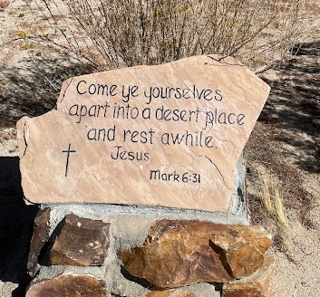
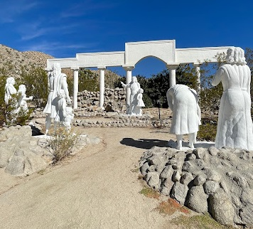

National Park
DECEMBER 12, 2023
2 mins Read
Desert Christ Park: A Spiritual Oasis in Yucca Valley

Nestled in the arid beauty of Yucca Valley, California, lies a unique and spiritual oasis known as Desert Christ Park. This hidden gem, founded in 1951 by sculptor Frank Antone Martin, is a blend of art, nature, and spirituality that leaves a lasting impression on all who visit. My brothers and I toured the property, taking in the serene atmosphere. The statues reminded us of 3D versions of the carvings of the Fourteen Stations of the Cross found inside at St. Basil's Catholic Church in Los Angeles on Wilshire Blvd. The park features a striking collection of over 40 sculptures depicting scenes from the life of Jesus Christ. These life-sized and larger-than-life concrete statues are scattered across the rugged landscape, creating a serene and contemplative atmosphere. As visitors wander through the park, they are not only treated to a visual feast of religious art but also find solace in the quietude of the desert surroundings.

The park features a striking collection of over 40 sculptures depicting scenes from the life of Jesus Christ. These life-sized and larger-than-life concrete statues are scattered across the rugged landscape, creating a serene and contemplative atmosphere. As visitors wander through the park, they are not only treated to a visual feast of religious art but also find solace in the quietude of the desert surroundings.

One of the park's highlights is the iconic "Desert Christ," a 10-foot tall statue of Jesus with outstretched arms, overlooking the vast expanse of the valley. This powerful sculpture has become a symbol of hope and inspiration for both locals and tourists alike